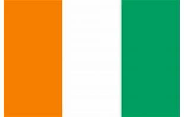

About Me
I am Kemonaho Christensen Esaie KOH, and I go by Christensen. I was born and grew up in Abidjan,
Ivory
Coast. I am the last born of a family of five children. I am married and have one child and he
is my
pride and joy. I am currently a student at BYU-Idaho, majoring in Software Development.
In my
free
time, I enjoy playing some cool games and watch some movies. As for my hobby, I enjoy hiking and
camping
in the mountains and forests.
I have a passion for learning and creating things that can
make a
positive impact on people's lives.
Ivory Coast

Ivory Coast, is a nation in western Africa bordered by Mali, Burkina Faso, Ghana, Liberia, and Guinea, with the Gulf of Guinea to its south. The country features diverse landscapes, including a coastal fringe with lagoons, an equatorial forest zone, a cultivated forest area, and a northern savanna region. Ivory Coast is home to over 60 ethnic groups, many of whom have affiliations with larger groups in neighboring countries, such as the Akan in Ghana and the Kru peoples in Liberia. The economy, while facing challenges like recessions and fluctuating commodity prices, is largely based on agriculture, with cocoa and coffee being major exports, making Ivory Coast the world's leading cocoa producer. Abidjan serves as the chief port and de facto capital, a vital shipping and financial hub for West Africa, while Yamoussoukro is the official administrative capital.